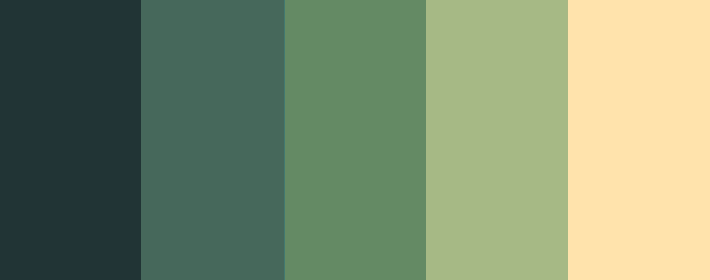

Love es un motor de videojuegos 3D que utiliza OGRE como sistema de renderizado, BulletPhysics como librería de física y Lua como lenguaje de scripting. Fue desarrollado por un grupo de nueve personas y se usó para desarrollar el videojuego "Crunch Through Hell".
Love utiliza la librería de renderizado gráfico OGRE, la cuál proporciona además gestor de recursos y jerarquía de entidades. FMOD como librería de audio, SDL para manejo de input, BulletPhysics para físicas 3D y Lua como lenguaje de scripting.
En cuanto a arquitectura de gameplay Love implementa un sistema de entidades y componentes y la entidades que se van actualizar, renderizar, etc. son las que se encuentran en la escena actual del juego. Para ello, Love cuenta con un gestor de escenas para cambiar de escena cuando sea necesario.
Por último, Love cuenta con una serie de componentes nativos del motor como Transform, Camera, MeshContainer, Collider, Rigidbody, Sound, e Image.
En el repositorio se encuentra la arquitectura de gameplay, componentes e información más detallada del motor.
En cuanto a mis contribuciones en el desarrollo de LoveEngine, me encargué de: investigar BulletPhysics y crear una capa alrededor de la librería para comunicarla con el motor, scripts de automatización para compilar las librerías y compilar la solución del motor (lo que me tomó gran parte del desarrollo ya que no tenía experiencia con scripts de automatización en Windows), control de errores en todos los módulos del motor e implementación de Overlays con OGRE para la interfaz de usuario.